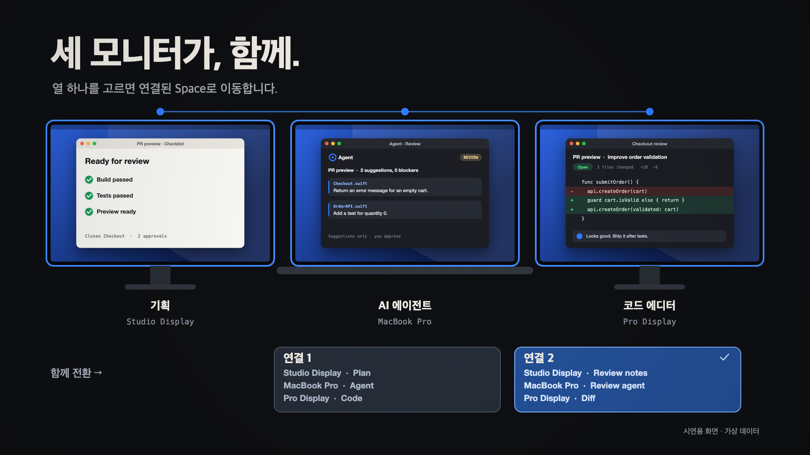
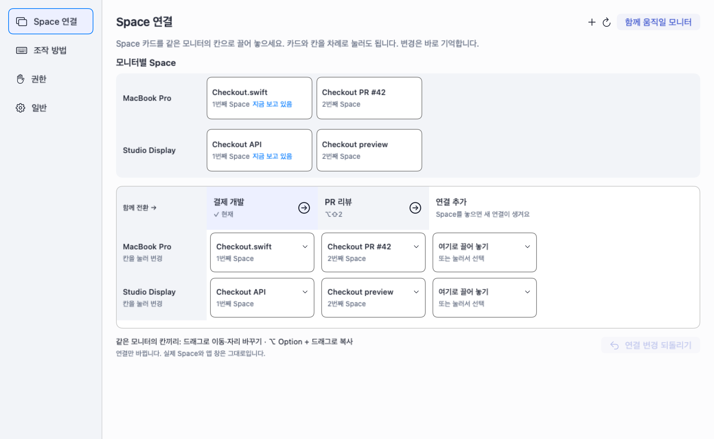

여러 모니터의 Space를, 함께.
같이 움직일 Space를 연결하고, 바뀐 화면만 끌어 맞추세요.

22.5초 모션그래픽 · 가상 데이터로 그린 시연이며, 실제 앱 캡처나 전환 속도 측정 영상은 아닙니다.
보고, 끌고, 함께 넘기세요.
- ⌥⇧Space로 전환표를 열고 열을 고르면 연결된 Space로 함께 이동합니다.
- 설정 또는 연결 수정에서 모니터별 Space와 연결표를 함께 봅니다.
- 오른쪽 빈 열에 카드를 놓으면 새 연결이 생깁니다. 이름 입력과 별도 저장은 필요 없습니다.
- 같은 모니터의 칸끼리 드래그하면 이동하거나 자리를 바꾸고, ⌥ Option을 누른 채 놓으면 복사합니다. 변경은 되돌릴 수 있습니다.
편집은 연결만 바꿉니다. 기존 Space와 앱 창은 그대로 유지됩니다.
See. Connect. Switch together.
- Hold ⌥⇧Space and choose a column to switch its connected Spaces together.
- Open Settings or Edit connections to see Spaces by display above the connection table.
- Drop a card into the blank column to create a connection. No naming dialog or separate save is required.
- Drag between cells for the same display to move or swap. Hold ⌥ Option when dropping to copy. Changes can be undone.
Editing changes connections. Existing Spaces and app windows stay in place.
실제 앱에서는 이렇게 보입니다.

가상 데이터로 렌더링한 실제 앱 화면. Sideby 1.0.0 기준입니다.
Sideby는 기존 Space를 연결하고 전환합니다. Space 생성·삭제, 앱 실행·전체 화면 전환, 창 위치 복원 기능은 제공하지 않습니다.